Recovery & Baseline: Resetting Your Dopamine Compass
Resetting your dopamine compass through evidence-based protocols for sleep, stress management, and baseline restoration.
Recovery & Baseline: Resetting Your Dopamine Compass
In the relentless demands of modern professional life, chronic stress and inadequate recovery often silently erode our fundamental neurochemical balance. Our dopamine baseline—the underlying level that dictates our mood, motivation, and resilience—can be significantly depleted, leaving us vulnerable to burnout, reduced drive, and increased impulsivity. This guide explores the intricate interplay between stress, sleep, and dopamine, offering evidence-backed protocols to recalibrate your system, stabilize your baseline, and reclaim your well-being.
The Vicious Cycle: Stress, Sleep, and Dopamine Depletion
The Erosion of Drive: How Stress and Sleep Loss Deplete Dopamine
Our ability to stay motivated and experience pleasure is profoundly tied to our dopamine baseline. When this baseline is healthy, we feel driven, focused, and resilient. However, chronic stress and persistent sleep disturbances act as powerful disruptors. Prolonged stress exposure can lead to a state of "anhedonia," where the brain's reward system becomes blunted, making it difficult to find motivation or pleasure even in activities we once enjoyed. 1
Similarly, sleep is not merely rest; it's a critical period for neurochemical recalibration. Insomnia and insufficient slow-wave sleep are pervasive challenges in modern life and are independently linked to stronger cravings and higher relapse risk in individuals struggling with compulsive behaviors. The lack of restorative sleep elevates stress and impulsivity, creating a vicious cycle that further entrenches a low dopamine baseline. 2
The Immediate Threat: Acute Stress and the Surge of Craving
While chronic stress wears us down over time, acute stress—those sudden surges of pressure or anxiety—can trigger immediate and intense cravings. When we face acute stress, our body releases stress hormones like cortisol and noradrenaline. These hormones, in turn, heighten dopaminergic "salience" signals for quick rewards, making them feel overwhelmingly important and desirable in that moment. 3
This stress-induced craving is a potent trigger for impulsive behaviors and can directly precede a lapse or relapse, as observed in day-by-day analyses of stress and craving in individuals. 4 It's why a frustrating email or a demanding deadline can send us reaching for junk food, mindless scrolling, or other quick fixes that offer a momentary dopamine spike, but ultimately deepen the deficit in our baseline.
The Path to Recalibration: Behavioral Strategies for Baseline Restoration
The good news is that we can actively counteract the negative effects of stress and sleep deprivation on our dopamine baseline. Targeted interventions focusing on foundational well-being are highly effective. Improving sleep quality, for instance, is a first-line priority in recovery protocols, as it directly impacts stress levels and self-regulation, potentially reducing relapse likelihood. 5
Regular moderate physical exercise is another powerful tool. Acutely, it reliably reduces momentary cravings and improves mood, while long-term exercise programs can significantly boost resilience. 6 Furthermore, mindfulness-based interventions, including meditation and breathwork, directly reduce stress reactivity and equip individuals with powerful skills to manage cravings, demonstrating significant reductions in relapse risk in clinical trials. 7 By consistently applying these behavioral strategies, we can restore our adaptive stress-response systems and gradually elevate our dopamine baseline for sustained well-being.
Understanding Your Dopamine Baseline

Figure 1: Dopamine Baseline vs. Spike. This illustration shows how a large dopamine "spike" (orange curve) from a rewarding event is followed by a dip below the baseline (dashed line) before returning to equilibrium. Higher peaks often lead to deeper, longer troughs, reflecting a "motivation hangover." Consistent healthy habits aim to slowly raise the baseline over time, rather than relying on frequent, extreme spikes.
The Stress-Reward Sensitization Loop

Figure 2: The Stress-Reward Sensitization Loop and How to Break It. This flowchart depicts how acute stress or anxiety triggers attention to quick rewards, leading to impulsive reward-seeking. This provides brief relief (a dopamine spike) but is followed by a drop in baseline mood/energy, feeding back into more stress. The diagram highlights "exit points" (grey ovals) where interventions can break the cycle, such as breathwork, exercise, social support, or mindful reflection, allowing for a reset instead of reinforcing the spiral.
-
Based on R4-C02. Specific citation: Baik (2020) DOI:10.1038/s12276-020-00532-4. ↩
-
Based on R4-C07. Specific citations: Zhang et al. (2021) DOI:10.3389/fpsyt.2021.785050, Brower et al. (1998) DOI:10.1093/alcalc/33.5.495. ↩
-
Based on R4-C01. Specific citations: Sinha (2024) DOI:10.1038/s41386-024-01728-3, McKee et al. (2011) DOI:10.1038/npp.2010.103. ↩
-
Based on R4-C03. Specific citation: Wemm et al. (2019) DOI:10.1037/adb0000494. ↩
-
Based on R4-C08. Specific citation: Zhang et al. (2021) DOI:10.3389/fpsyt.2021.785050. ↩
-
Based on R4-C09. Specific citations: Haasova et al. (2013) DOI:10.1016/j.addbeh.2013.06.012, Wang et al. (2014) DOI:10.1080/16066359.2013.842247. ↩
-
Based on R4-C10. Specific citation: Bowen et al. (2014) DOI:10.1001/jamapsychiatry.2013.3516. ↩